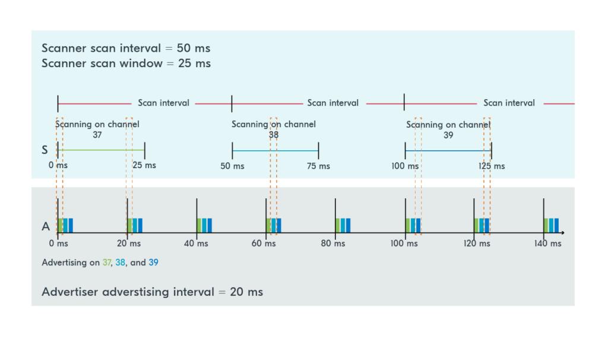

Programming
General Driver Model
Notes
yowai more
The application interacts with the hardware through the generic API by obtaining a device pointer for the hardware in question, using the macro DEVICE_DT_GET() or related macros. The Zephyr device model is responsible for the association between generic APIs and device driver implementations.
use the macro DEVICE_DT_GET()
o get the device pointer, you need to pass the devicetree node identifier.
As mentioned in the Devicetree section, there are many ways to get the node identifier.
Two common ways are by the node label through the macro DT_NODELABEL() and by an alias through the macro DT_ALIAS().
Before using the device pointer, it should be checked using device_is_ready()
Most peripheral APIs will have an equivalent to DEVICE_DT_GET() and device_is_ready() that are specific to the peripheral. For example for the GPIO peripheral, there is GPIO_DT_SPEC_GET() and gpio_is_ready_dt().
These are the recommended ways to use the peripheral as they collect more information about the peripheral from the devicetree structure and reduce the need to add peripheral configurations in the application code.
Device Tree Overlay
Kconfig
Includes
Declaration Space
To use a device driver generic API, you must have a pointer of type const struct device to point to its implementation. You need to do this per peripheral instance. For example, if you have two UART peripherals (&uart0 and &uart1) and you want to use them both, you must have two separate pointers of type const struct device.In other words, you need to have two different calls to DEVICE_DT_GET().
Function Declaration Space
Inline Code
Bottom
GPIOs
Notes
NSome of the generic APIs in Zephyr have API-specific structs that contain the previously mentioned device pointer, as well as some other information about the device.
In the GPIO API, this is the structure gpio_dt_spec. This structure encompasses the device pointer const struct device
* port, as well as the pin number on the device, gpio_pin_t pin, and the device’s configuration flags, gpio_dt_flags_t dt_flags.
The port is the GPIO device controlling the pin. Pins are usually grouped and controlled by a single GPIO port. On most Nordic SoCs, there are either one or two GPIO controllers, named GPIO0 or GPIO1.
Similar to DEVICE_DT_GET(), GPIO_DT_SPEC_GET() also takes the devicetree node identifier. It also takes the property name of the node.
The function will return a variable of type gpio_dt_spec, containing the device pointer as well as the pin number and configuration flags.
Device Tree Overlay
Kconfig
Includes
#include <zephyr/kernel.h>
#include <zephyr/device.h>
#include <zephyr/devicetree.h>
#include <zephyr/drivers/gpio.h>
Declaration Space
// Declare variables, constants, etc.
static const struct device *gpio_dev;
static struct gpio_callback button_cb_data;
Function Declaration Space
// Declare functions
void button_pressed(const struct device *dev, struct gpio_callback *cb, uint32_t pins);
Inline Code
Bottom
BLE
Notes

Types of Advertising:
ADV_IND scannable and connectable
ADV_DIRECT_IND connectable, directed
ADV_SCAN_IND scannable (no connection)
ADV_NONCONN_IND beacon
Device Tree Overlay
Kconfig
prj.conf:
Kconfig.sysbuild (if sysbuild is used):
source "${ZEPHYR_BASE}/share/sysbuild/Kconfig"
config NRF_DEFAULT_IPC_RADIO
default y
config NETCORE_IPC_RADIO_BT_HCI_IPC
default y
Declaration Space
Function Declaration Space
Inline Code
Bottom
Logging
Notes
There are four severity levels available in the system, see the table below.
| Number | Severity Level | Details | Macro |
|---|---|---|---|
| 1 (most severe) | Error | Severe error conditions | LOG_LEVEL_ERR |
| 2 | Warning | Conditions that should be taken care of | LOG_LEVEL_WRN |
| 3 | Info | Informational messages that require no action | LOG_LEVEL_INF |
| 4 (least severe) | Debug | Debugging messages | LOG_LEVEL_DBG |
Kconfig
Includes
Declaration Space
Inline Code
int exercise_num=2;
uint8_t data[] = {0x00, 0x01, 0x02, 0x03,
0x04, 0x05, 0x06, 0x07,
'H', 'e', 'l', 'l','o'};
//Printf-like messages
LOG_INF("nRF Connect SDK Fundamentals");
LOG_INF("Exercise %d",exercise_num);
LOG_DBG("A log message in debug level");
LOG_WRN("A log message in warning level!");
LOG_ERR("A log message in Error level!");
//Hexdump some data
LOG_HEXDUMP_INF(data, sizeof(data),"Sample Data!");
template
Notes
- Copy first, then edit!!!!!